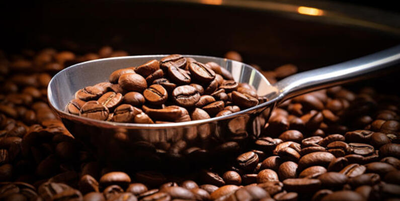

Welcome to the Homepage of Data Grinders
Introduction
"DATA" is a 501(c)(3) non-profit agency that conducts objective, nonpartisan research and delivers insights that decision-makers can trust. Our funding consists of grants, fundraisers, and donations. Over the years, we have experienced funding challenges and have decided to offset our expenses by establishing a for-profit subsidiary called Data Grinders. Our primary objective is to generate consistent income while promoting the mission and values of "DATA."
Overview of the Project and its Purpose
Objectives:
- Revenue Generation: Provide financial support to fund "DATA's" non-profit programs and initiatives.
- Brand Awareness: Leverage the coffee business to raise awareness about our non-profit's mission.
- Community Engagement: Create opportunities for local partnerships and employment.
- Sustainability: Establish a long-term funding source that reduces reliance on donations and grants.
Members
- Ashley Cooper: Visualization, Coffee Research, Project Report, Outline/Proposal, Git setup, Presentation
- Nurmaa Dashzeveg: Final Jupyter Notebook, Presentation, CSV Pull, Visualization
- Deidra Lebron: CSV Pull, README, Coffee Research, Presentation, HTML, Visualization
- Vraj Patel: HTML, CSS, Visualization, PostgreSQL, Presentation